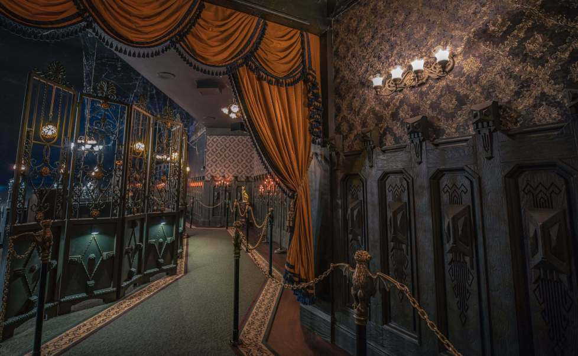

Story Time
You hear a voice and see two spirits wandering around the room. They start talking...
"Welcome stranger. I am Adam, and this is my wife Lucy. We lived in this house in the late 1980s. We were a
happy couple, but one unfortunate day our lives turned upside down.
A group of filthy men decided to break in, abused and raped Lucy. Once I got back, Lucy had already left the world. I cried a lot,
and made it my mission to avenge her death.
I showed no mercy to every one of those demons. Despite killing them,
I was now alone, so I decided to take my own life in an attempt to be back with Lucy. I finally reunited with her in the afterlife, but we
could not find anyone worthy of taking good care of the house where we once shared so much love and happiness.
All we see in humans is LUST. But, since you have made till here, you realize humans are filled with it. We expect
you can bring joy and happiness to this house that it has longed for. So, we will leave this house for your care and be free.
Remember, there is no room for people with LUST filled in their hearts in this house. Make sure this house will never be tainted.

Goodbye, Stranger!
Suddenly the lights turn back on, and the house looks like a palace.
To be continued......
Game Over